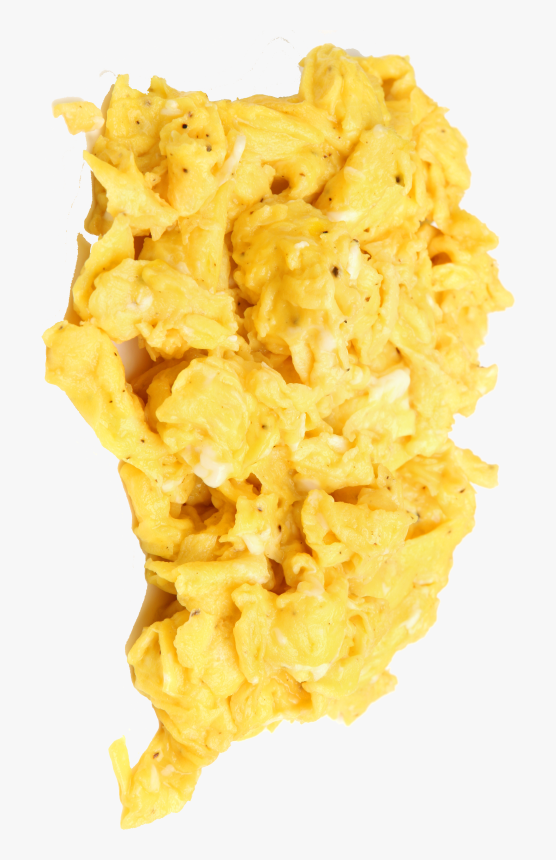

scrambled eggs
ETC: 5-10 min
one of my favorite food is scrabled eggs. this is because it tastes good, and can be used in combonation with so many other foods.

ingrediants
- ½ of 4 egg
- a pinch of salt
- 500ml of pepper
- any thing else you want to add in
instructions
- First take your 2 eggs and crack them into a bowl. whisk for a minute
- Get a pan and put it on a stove. pour two tsp of olive oil into your pan
- After whisking, put a pinch of salt and DUMP 500 mls of pepper into the bowl for that little bit of extra spice
- At this point you can add anything you want to the bowl as eggs are viable with so many things. I would suggest greens though
- Then, heat up the pan with the oil in it turn it up to 65°c. try to get the oil all over the pan
- Wait for about 15 seconds then pour all contents from the bowl into the pan.
- Once you get all contents out of the bowl, get a wooden spoon, and stir the eggs every few seconds.
You can tell the eggs are done once they are significantly less runny then how they were before.
- once your done, you put your eggs onto a plate and voila! the eggs are ready to serve